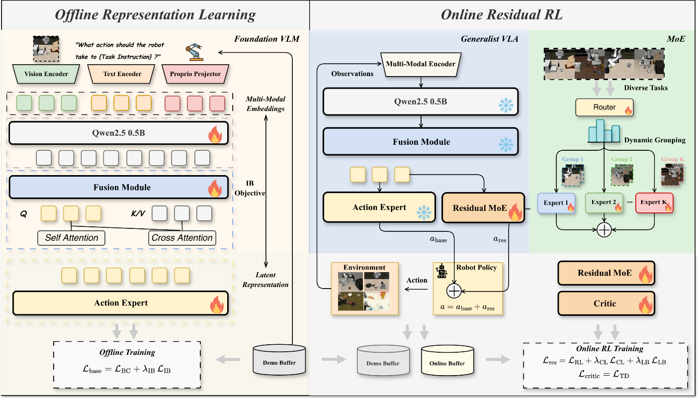

DyGRO-VLA: Cross-Task Scaling of Vision-Language-Action Models via Dynamic Grouped Residual Optimization
Pipeline

Abstract
Recent progress in Reinforcement Learning (RL) has shown strong potential for enhancing the fine-grained manipulation capabilities of Vision-Language-Action (VLA) models. However, existing RL fine-tuning methods are typically task-specific, which can disrupt the original cross-task representations learned by generalist VLA models and hinder their scalability across diverse manipulation tasks. In this work, we propose DyGRO-VLA (Dynamic Grouped Residual Optimization), a novel two-stage framework for cross-task RL fine-tuning of VLA models. In the first stage, we introduce an information-theoretic objective to learn compact and task-relevant latent representations that preserve cross-task knowledge. In the second stage, we design a Mixture-of-RL-Residuals (MoRR) module, which dynamically routes tasks to specialized residual policy experts based on learned task embeddings. This enables efficient online policy optimization while mitigating negative transfer across tasks. Extensive experiments on LIBERO, RoboTwin2, and real-world robotic manipulation tasks demonstrate that DyGRO-VLA consistently improves multi-task success rates and generalization performance compared to strong VLA and RL fine-tuning baselines.
LIBERO Evaluation Videos
LIBERO-Spatial pick up the black bowl on the wooden cabinet and place it on the plate
LIBERO-Object pick up the alphabet soup and place it in the basket
LIBERO-Object pick up the orange juice and place it in the basket
LIBERO-Goal open the middle drawer of the cabinet
LIBERO-Goal put the wine bottle on the rack
LIBERO-10 put the white mug on the plate and put the chocolate pudding to the right of the plate
LIBERO-10 put both moka pots on the stove
RoboTwin Videos
Pick Dual Bottles
Simulation Pick Dual Bottles
Real-world Pick Dual Bottles
Place Empty Cup
Simulation Place Empty Cup
Real-world Place Empty Cup
Stack Bowls Two
Simulation Stack Bowls Two
Real-world Stack Bowls Two
Beat Block Hammer
Simulation Beat Block Hammer
Real-world Beat Block Hammer
Conclusion
We investigate the scalability challenge of RL post-training for vision-language-action models, where multi-task online optimization can induce cross-task interference and catastrophic forgetting. To address this, we propose DyGRO-VLA, a two-stage framework that learns task-sharing representations from offline demonstrations and refines behavior online via dynamically routed residual RL experts. Across LIBERO, RoboTwin2, and real-world Sim2Real experiments, DyGRO-VLA improves multi-task performance and robustness over strong baselines, with notable gains on challenging tasks. These results highlight the value of preserving shared representations and using dynamic residual modularization for scalable VLA post-training. An important direction of future work is extending DyGRO-VLA to mobile manipulation tasks that involving locomotion tasks before manipulating objects.